Released on August 12, 2009
(Next Release on August 19, 2009)
It Only Takes a Few: Compliance with OPEC Production Targets
We can all relate to times when a few people in a group do the hard work, but the whole group benefits. The Organization of the Petroleum Exporting Countries (OPEC) is no different when it comes to adhering to members’ production targets. Since April 1982, OPEC has used a production allocation, or quota, system for its members to alter crude oil supplies. OPEC members’ compliance with their individual targets, however, has been inconsistent over the years. Yet, strong compliance to tighter quotas by just a few countries can go a long way toward raising oil prices, benefiting all OPEC member countries.
OPEC production decisions matter because OPEC members account for over 40 percent of global oil production, and because they hold almost all of the world’s available surplus crude oil production capacity, most of which is located in countries bordering the Persian Gulf. Between 2000 and 2009, OPEC cut production allocations 11 times to increase prices, and increased production targets 13 times to ease upward price pressures.
OPEC typically cuts quota in proportion to previous allocations or production levels. Industry analysts calculate compliance rates by comparing how much production was actually cut relative to the targeted reductions. On average, between 2000 and 2009, OPEC compliance averaged slightly better than 60 percent over the first two months following a quota cut, which supported price increases as oil was removed from the market. However, the resulting higher prices reduce the incentive for OPEC members to continue cutting production as much as they did initially. Thus, after peaking in the first 2 months, OPEC members’ compliance has tended to weaken significantly in subsequent months, averaging only 47 percent in the third month following the quota cuts, 38 percent in month four, and even lower thereafter (see Figure 1).
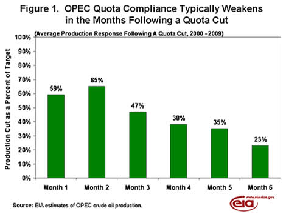
The latest round of OPEC cuts took effect on January 1, 2009, and called for a 4.2 million barrel per day (bbl/d) reduction from September 2008 production levels. Saudi Arabia, Kuwait, the United Arab Emirates (UAE), and Qatar accounted for about three-fourths of the 2.6 million bbl/d of actual cuts made by OPEC during the latest round of production allocations, in line with the trend during the past decade. Saudi Arabia even exceeded their target production cut in the first quarter (see Figure 2). Other OPEC countries contributed less, both because they have smaller production and quota totals, and because compliance has been weakest among these countries. Overall, these other OPEC countries saw compliance rates during the first quarter of 2009 lower than the historical averages.
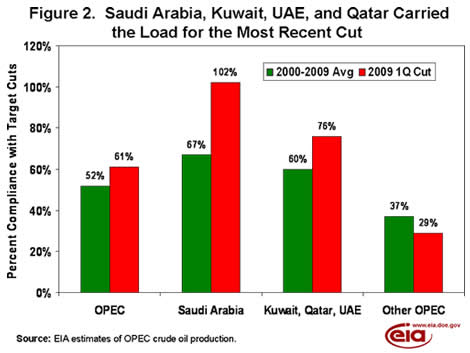
Based on historical trends, OPEC production may increase in the months ahead, especially if crude oil prices remain significantly higher than they were when the cuts were first implemented. West Texas Intermediate crude oil prices have risen from an average of $42 per barrel in January 2009 to an average of nearly $70 per barrel in June. Given the increase in oil prices, there is now less incentive for OPEC members to adhere as strictly to cuts as they have, which is consistent with their past behavior. Saudi Arabia, Kuwait, Qatar, and the UAE have been most responsible for OPEC’s success in complying with their quotas and whether this group continues to cut production at the same rate in the coming months will be key to OPEC’s continuing compliance rates for the most recent cut. As with so many other group projects, the success of OPEC as a whole is largely dependent on the efforts of just a few countries.
U.S. Average Gasoline and Diesel Prices Are Still Climbing
The U.S. average price for regular gasoline jumped nine cents to settle at $2.65 per gallon. Despite a cumulative increase of 18 cents over the past three weeks, the national average was $1.16 below the year-ago price. On the East Coast and in the Midwest, the average price moved up eight cents to $2.61 and $2.59 per gallon, respectively. While remaining the lowest of any region, the average price on the Gulf Coast rose nine cents to $2.52 per gallon. For the second week in a row, the Rocky Mountains had the smallest increase of any region, moving up about seven cents to $2.57 per gallon. Registering the largest increase of any region, the average on the West Coast shot up nearly thirteen cents to $2.95 per gallon. In California, the average surged fourteen cents to reach $3.04 per gallon.
The national average price for diesel fuel increased eight cents to $2.63 per gallon. The average was $1.73 below a year ago. Although the national average price rose for the third consecutive week, this was the first time since the week of June 22, 2009 that prices rose in all regions of the country. On the East Coast, the average shot up nine cents to $2.67 per gallon. In the Midwest, the average increased eight cents to $2.60 per gallon. The average on the Gulf Coast jumped seven cents to $2.58 per gallon. The average in the Rocky Mountains increased for the first time since July 6, 2009, yet was the lowest of any region at $2.57 per gallon. On the West Coast, the average price increased six cents to $2.70, while the average in California jumped eight cents to $2.84 per gallon.
Propane Inventories Increase Slightly
Propane stocks added 0.5 million barrels last week sending overall inventories to 69.5 million barrels. The Midwest region realized the largest gain with 0.8 million barrels while the Gulf Coast region lost 0.5 million barrels of inventory. The East Coast and Rocky Mountain/West Coast regional inventories each built by a small amount. Propylene non-fuel use inventories fell by a significant margin last week, with its share of total propane/propylene inventories dropping to 2.9 percent. After declining for the past four weeks, propane production rebounded to approximately 1.1 million barrels per day.
Text from the previous editions of This Week In Petroleum is now accessible through a link at the top right-hand corner of this page.
| Retail Prices (Cents Per Gallon) | |||||||
| 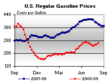 | 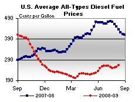 | ||||||
| Retail Data | Changes From | Retail Data | Changes From | ||||
| 08/10/09 | Week | Year | 08/10/09 | Week | Year | ||
| Gasoline | 264.7 | Diesel Fuel | 262.5 | ||||
| Spot Prices (Cents Per Gallon*) | |||||||||||||||||||||||||||||||||||
| 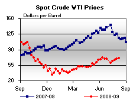 | 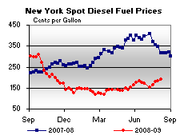 | ||||||||||||||||||||||||||||||||||
| 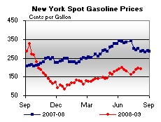 | 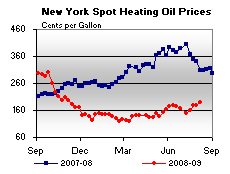 | ||||||||||||||||||||||||||||||||||
|
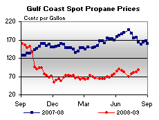 | ||||||||||||||||||||||||||||||||||
| *Note: Crude Oil WTI Price in Dollars per Barrel. | |||||||||||||||||||||||||||||||||||
| Stocks (Million Barrels) | |||||||
| 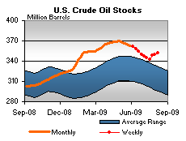 | 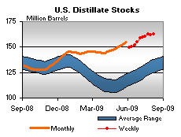 | ||||||
| 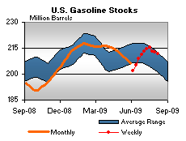 | 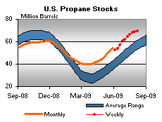 | ||||||
| Stocks Data | Changes From | Stocks Data | Changes From | ||||
| 08/07/09 | Week | Year | 08/07/09 | Week | Year | ||
| Crude Oil | 352.0 | Distillate | 162.3 | ||||
| Gasoline | 211.9 | Propane | 69.485 | ||||